Dogelthy
A dog health supplement brand built to feel like a friend, not a pharmacy — a playful multi-colour identity, hand-drawn dog illustrations, and a full application system from packaging to e-commerce to street advertising.
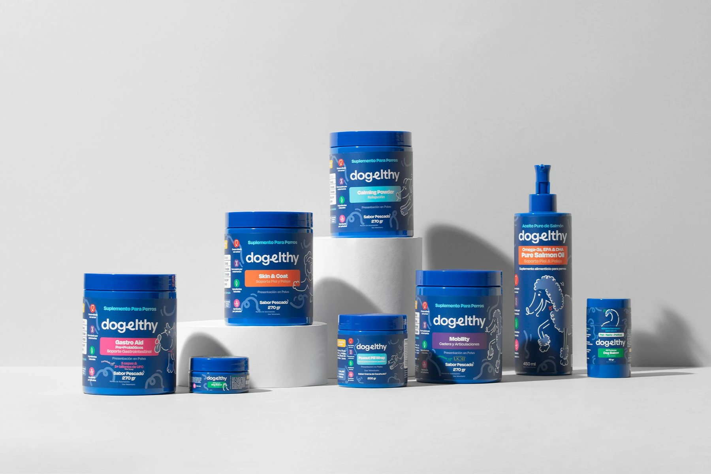
The brief
Pet supplement packaging defaults to one of two moods: sterile clinical blue-and-white, or saccharine cartoon pet-store branding. Neither builds trust with an owner who's genuinely worried about their dog's joints, skin or gut health. Dogelthy needed to land somewhere more specific: credible enough that a buyer believes the science claims on the label, warm enough that it still feels made by people who love dogs, and distinct enough to stand out on a shelf of identical blue tubs.
Approach
Instead of one safe brand colour, I built the system around a confident, varied palette — electric blue as the anchor, with green, pink, orange and yellow assigned to different product lines and use needs (joint care, gut health, skin and coat, calming). That gives the range shelf-distinctiveness between SKUs while the shared logo, typography and line-art style keep it unmistakably one brand.
The hand-drawn dog illustration style — loose, single-line, slightly wonky — does a specific job: it signals warmth and a sense of humour without tipping into childish cartoon territory, which matters for a product a vet might also need to take seriously. The tagline work reinforces that same register: "Larga vida a tu perrhijo" (a pun on "perro"/dog and "hijo"/child — roughly "long life to your dog-child") and "Por amantes de perros, para amantes de perros" ("by dog lovers, for dog lovers") both do more work than a generic wellness slogan would.
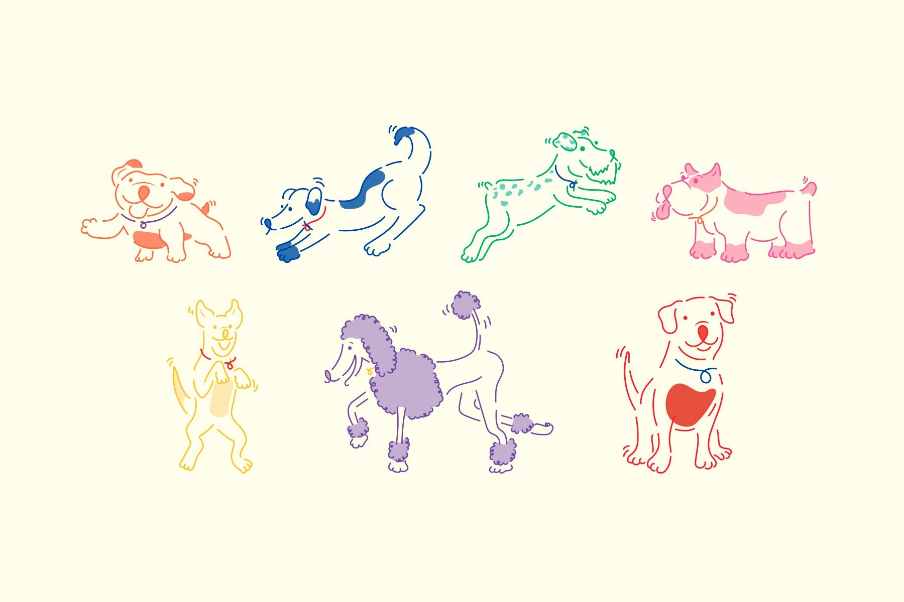
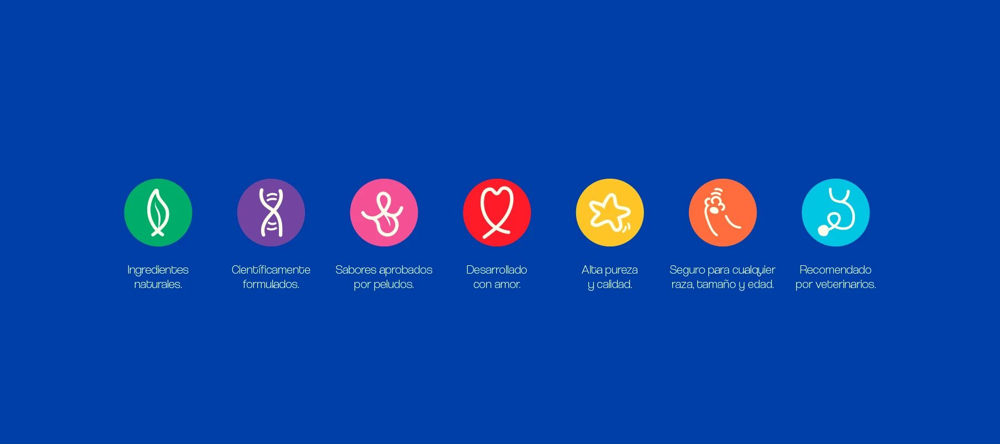
What I built
Packaging across the full product range, plus environmental, e-commerce and shipping applications — proving the identity holds up from a product label to a city billboard.
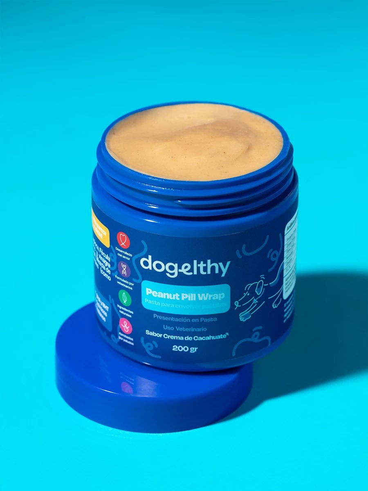
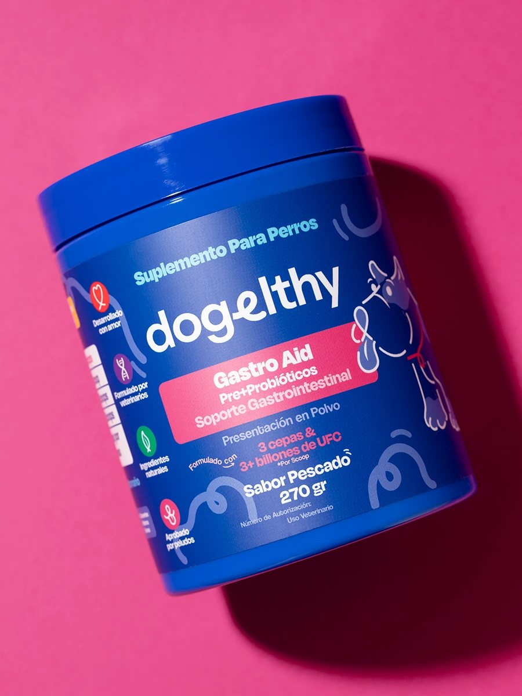
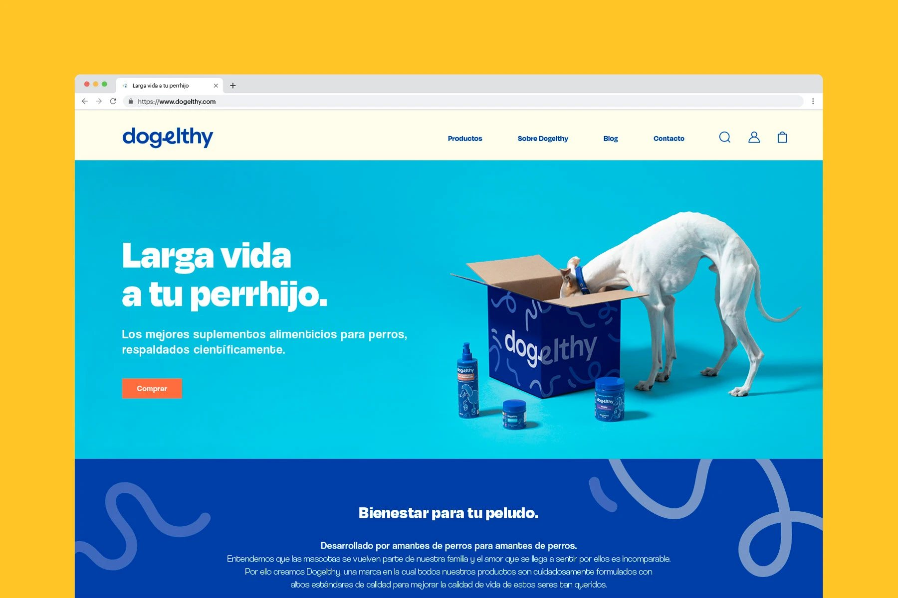
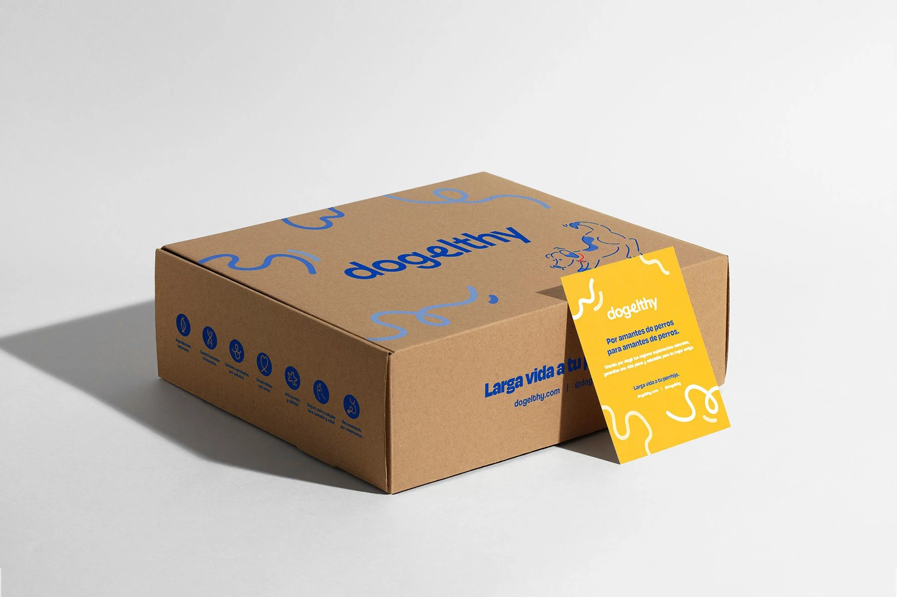
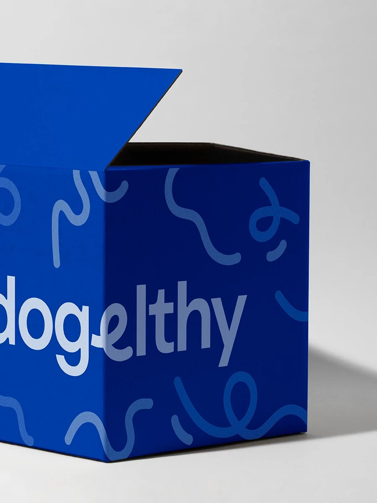
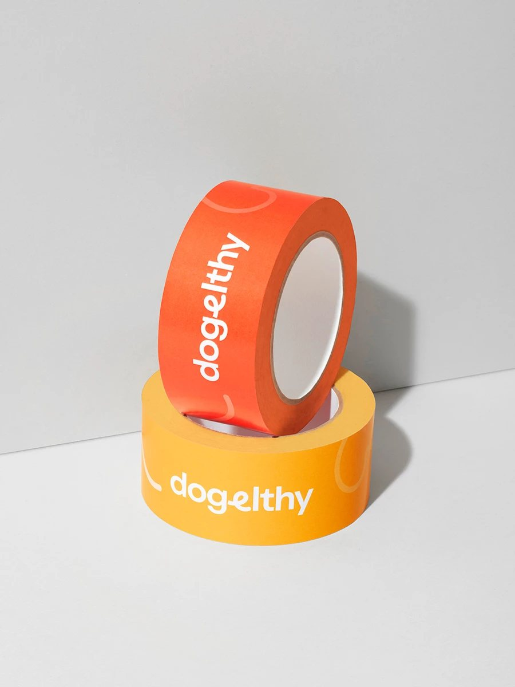
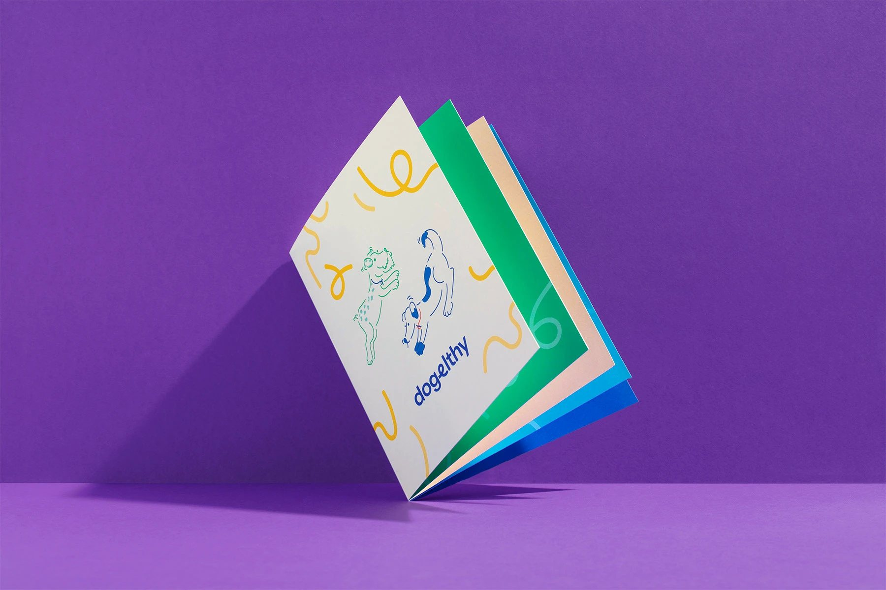
Photography & social
Real dogs, not stock photography — the product photography is built around a dog actually interacting with the product, which does more to build trust than a studio-clean product-only shot.
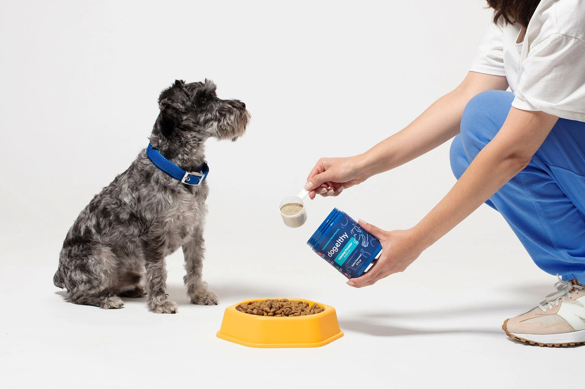
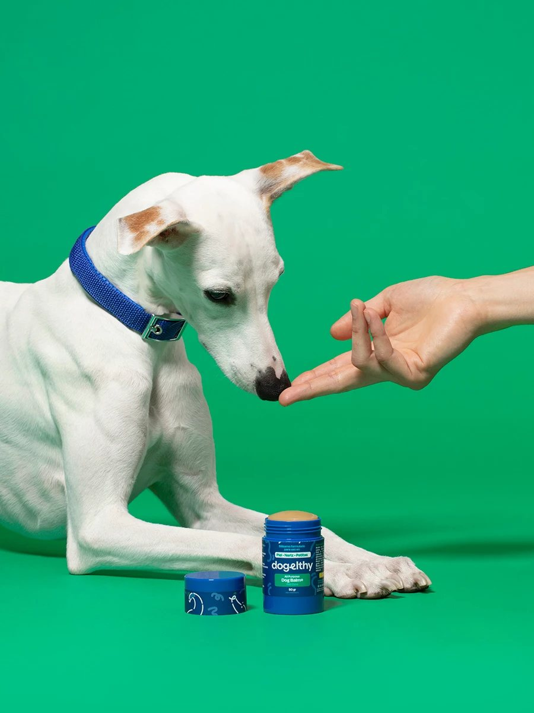
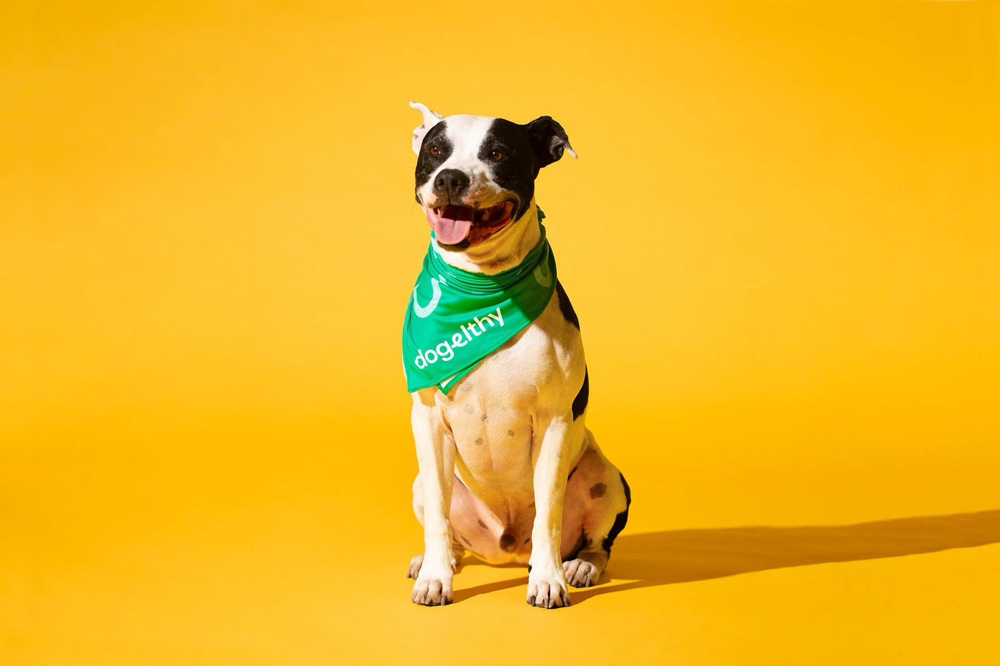
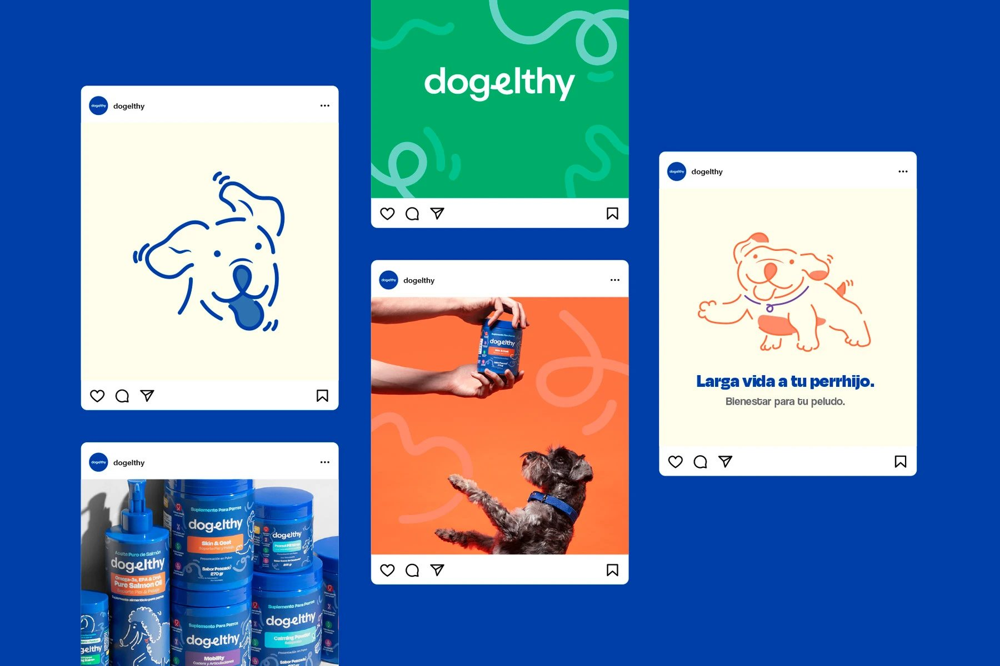
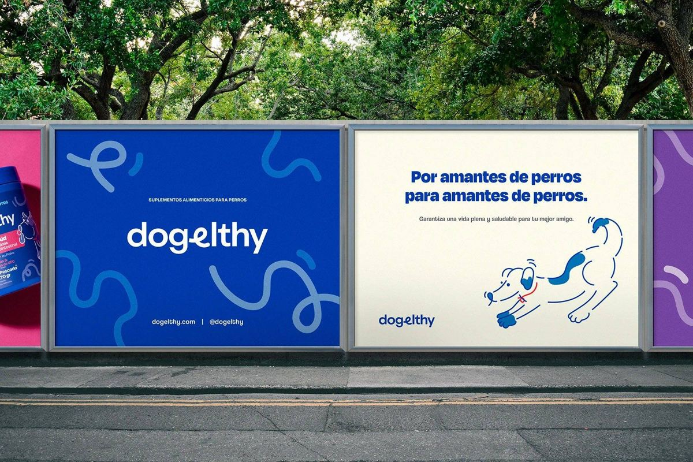
Outcome
A complete brand system spanning packaging, e-commerce, shipping, merchandise, outdoor and social — built so the warmth of the illustration style and the credibility of the icon/claims system work together instead of competing.
The real test of a multi-colour system like this is whether a shopper can tell two different SKUs apart at a glance while still recognising them as the same brand — that's the balance the whole identity is built around, more than any single asset in it.